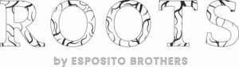

Trade Mark Journal No.2025/021 23 May 2025
UK00004198672 5 May 2025 (3)

- Class 3
- Hair shampoo; Hair shampoos; Shampoo; Hair lotion; Hair conditioner; Non-medicated hair shampoos; Shampoos for human hair; Hair lotions; Hair moisturizers; Dandruff shampoo; Hair moisturisers; Hair rinses; Hair gel; Hair pomades; Baby hair conditioner; Hair conditioners; Hair styling lotions; Hair relaxers; Hair texturizers; Hair bleach; Hair serums; Hair mousse; Hair sprays; Hair spray; Hair mascara; Hair cosmetics; Hair gels; Hair balm; Hair styling gel; Hair moisturising conditioners; Hair dye; Hair bleaches; Hair conditioner bars; Hair rinses [for cosmetic use]; Hair emollients; Shampoos; Hair oils; Colouring lotions for the hair; Hair colourants; Hair lighteners; Hair creams; Dyes for the hair; Hair dyes; Hair balms; Hair balsam; Styling sprays for the hair; Hair mousses; Hair rinses [shampoo-conditioners]; Baby shampoo mousse; Hair tonics; Hair styling gels; Styling gels for the hair; Hair cream; Hair styling spray; Hair tonic; Mousses [toiletries] for use in styling the hair; Hair powder; Hair colorants; Hair wax; Hair nourishers; Cosmetic hair lotions; Hair care lotions; Hair oil; Hair conditioners for babies; Oils for hair conditioning; Hair liquid; Conditioners for treating the hair; Non-medicated hair lotions; Hair and body wash; Carpet shampoo; Baby shampoo; Hair colouring; Cosmetic preparations for the hair and scalp; Hair lacquer; Hair styling waxes; Hair neutralizers; Hair lacquers; Hair tonic [for cosmetic use]; Wax treatments for the hair; Hair liquids; Hair care serums; Hair color; Hair tonics [for cosmetic use]; Tints for the hair; Conditioners for use on the hair; Gels for fixing hair; Dry shampoos; Non-medicated balm for hair; Hair tonic [non-medicated]; Hair masks; Hair strengthening treatment lotions; Hair colour removers; Colour removers for the hair; Hair color removers; Hair colouring and dyes; Cosmetics for the use on the hair; Perfumes; Fragrances; Oils for perfumes and scents; Perfumery and fragrances; Perfume; Aromatics for perfumes; Potpourris [fragrances]; Perfume oils; Liquid perfumes; Perfumes for ceramics; Aromatics for fragrances; Colognes; Extracts of perfumes; Scents; Fragrances for automobiles; Extracts of flowers [perfumes]; Flowers (Extracts of -) [perfumes]; Extracts of flowers being perfumes; Natural oils for perfumes; Musk [perfumery]; Fragrance sachets; Perfumes for cardboard; Perfumeries; Perfumery; Perfumery products; Household fragrances; Amber [perfume]; Solid perfumes; Deodorants for personal use [perfumery]; Cedarwood perfumery; Body deodorants [perfumery]; Perfume oils for the manufacture of cosmetic preparations; Body fragrances; Perfumed potpourris; Perfumed soaps; Aftershave lotions; Aftershaves; Cologne; Fumigation preparations [perfumes]; Room perfume sprays; Ionone [perfumery]; Room fragrances; Fragrance preparations; Perfume water; Perfumed creams; Perfumed sachets; After-shave lotions; Scented soaps; Fragrance emitting wicks for room fragrance; Scented oils; Fragrance refills for non-electric room fragrance dispensers; Essences for fragrancing; Synthetic perfumery; Fragrance sachets for eye pillows; Perfumed powders [for cosmetic use]; Vanilla perfumery; Perfumed powders; Aftershave balms; Synthetic vanillin [perfumery]; After-sun oils [cosmetics]; Perfumed lotions [toilet preparations]; Aromatherapy lotions; Perfuming sachets; Scented body lotions and creams; Ethereal oils for fragrancing; Mint for perfumery; Moisturisers [cosmetics]; Skin fresheners [cosmetics]; Scented body lotions; Scented sachets; Scented linen sprays; Geraniol for fragrancing; Suntan oils [cosmetics]; Scented water for fragrancing; Aftershave creams; Air fragrance preparations; Geraniol fragrancing compounds; Tanning oils [cosmetics]; Room perfumes in spray form; Perfumes for industrial purposes; Roll-on deodorants [toiletries]; Feminine deodorant sprays; Perfumed soap; Cosmetics; Sachets for perfuming linen; Linen (Sachets for perfuming -); After-shave balms; Pomanders [aromatic substances]; Peppermint oil [perfumery]; Essential oils as perfume for laundry purposes; Perfumed body lotions [toilet preparations]; Natural perfumery; Eau de cologne [cologne water]; Aromatic potpourris; Fragrances for personal use; Incense sachets; Fragrant sachets; Skincare cosmetics; Cosmetics in the form of lotions; Beauty lotions; Air fragrance reed diffusers; Agarwood [incense]; After-shave creams; Aftershave; Eau de colognes; Scented body creams; Suncare lotions; Eau de parfum; Eau de Cologne; Eau de cologne; Eaux de Cologne; Eaux de cologne; Eau de toilette; Eaux de toilette; Aftershave balm; Cologne water; After-shave; Aftershave emulsions; Synthetic musk; After-shave gel; Perfumed powder; Aftershave milk; Scented body spray; Aftershave moisturising cream; Anti-perspirant deodorants; Lavender gel; Perfumed powder [for cosmetic use]; Piperonal fragrancing compounds; Incense spray; After-shave emulsions; Ambergris; Aftershave gels; Geraniol; Heliotropin fragrancing compounds; Scented fabric refresher spray; Scented fabric refresher sprays; Scented room sprays; Musk [natural]; Natural musk; Ethereal essences and oils; Jasmine oil; Suntan lotion [cosmetics]; Wax (Depilatory -); Depilatory wax; Polishing wax; Wax (Polishing -); Mustache wax; Moustache wax; Wax (Moustache -); Scented wax melts; Shoe wax; Car wax; Automobile wax; Floor wax; Carnauba wax for automotive use; Boot wax; Laundry wax; Wax (Laundry -); Cobblers' wax; Wax (Cobblers' -); Shoemakers' wax; Floor wax remover; Floor wax removers; Car wax with a paint sealant; Prepared wax for polishing; Eyebrow styling wax; Tailors' wax; Wax (Tailors' -); Non-slipping wax for floors; Floors (Non-slipping wax for -); Wax for floors (Non-slipping -); Depilatory waxes; Wax melts [fragrancing preparations]; Wax stripping preparations; Wax for parquet floors; Preparations for stripping wax from floors; Wax (Parquet floor -); Parquet floor wax; Agents for removing wax; Epilating waxes; Wax strips for removing body hair; Waxes for leather; Massage waxes; Floor wax removers [scouring preparations]; Removers (Floor wax -) [scouring preparations]; Tailors' and cobblers' wax; Natural floor waxes; Depilatory sugar paste; Lip pomades; Hairspray; Mousses being hair styling aids; Styling paste for hair; Styling mousse; Shaving mousse; Brilliantine; Styling lotions; Hairstyling serums; Hair protection mousse; Gel sprays being styling aids; Emollient shampoos; Pomades for cosmetic purposes; Shaving lotion; Hair styling preparations; Detanglers; Hair glazes; Beard balm; Shaving gel; Shaving balms; Hair glaze; Shaving balm; Depilatory lotions; Hair-washing powder; Shaving lotions; Mattifying gel cream; Hair chalks; Eyeliner; Gels for use on the hair; Massage oil; Cuticle oil; Pine oil; Cleansing oil; Shaving oil; Bath oil; Body oil; Beard oil; Baby oil; Facial oil; Rose oil; Combing oil; Oil of turpentine for degreasing; Skin moisturizer; Skin moisturiser; Skin moisturizers; Skin moisturisers; Skin lighteners; Skin lotion; Skin lotions; Lotions for the skin; Skin creams; Creams for the skin; Skin cleansers; Skin make-up; Skin hydrators; Skin emollients; Skin toner; Skin cream; Skin moisturizer masks; Oils for the skin; Skin toners; Cosmetics for use in the treatment of wrinkled skin; Skin masks; Skin cleansing lotion; Skin soap; Exfoliants for the care of the skin; Cosmetics for protecting the skin from sunburn; Skin moisturizers used as cosmetics; Colour cosmetics for the skin; Creams for tanning the skin; Skin lightening creams; Skin conditioners; Skin foundation; Skin cleansing cream; Cosmetic creams for dry skin; Skin cleansers [cosmetic]; Cosmetic creams for the skin; Skin creams [cosmetic]; Skin creams [for cosmetic use]; Milky lotions for skin care; Skin texturizers; Exfoliants for the cleansing of the skin; Cosmetics for the treatment of dry skin; Skin toners [cosmetic]; Moisturizing preparations for the skin; Skin care cosmetics; Skin fresheners; Skin cream [for cosmetic use]; Skin whitening creams; Creams (Skin whitening -); Creams for firming the skin; Skin care mousse; Skin calming serum; Moisturising skin lotions [cosmetic]; Tissues impregnated with a skin cleanser; Non-medicated skin serums; Skin masks [cosmetics]; Moisturising skin creams [cosmetic]; Cream for whitening the skin; Whitening the skin (Cream for -); Skin balms [cosmetic]; Skin care creams [cosmetic]; Cosmetic creams for skin care; Cosmetics for use on the skin; Skin care lotions [cosmetic]; Skin care oils [cosmetic]; Skin clarifiers; Skin cleansers [non-medicated]; Non-medicated skin creams; Skin creams [non-medicated]; Skin relief serum [cosmetic]; Skin cleansing foams; Non-medicated skin lotions; Skin lightening compositions [cosmetic]; Cosmetic creams for firming skin around eyes; Essences for skin care; Skin emollients [non-medicated]; Skin cleansing cream [non-medicated]; Smoothing emulsions for the skin; Foot masks for skin care; Skin recovery creams [cosmetics]; Cosmetic skin fresheners; Cleansing milks for skin care; Perfumed oils for skin care; Skin whitening preparations; Skin care oils [non-medicated]; Cosmetic skin enhancers; Oils for moisturising the skin after sunbathing; Clay skin masks; Hand masks for skin care; Skin care preparations; Skin balms (Non-medicated -); Non-medicated skin balms; Cosmetic preparations for skin firming; Skin tonics [non-medicated]; Wrinkle removing skin care preparations; Horse oil cream for skin care; Non-medicated stimulating lotions for the skin; Skin softening preparations; Skin hydrators for cosmetic purposes; Cloths impregnated with a skin cleanser; Cosmetic preparations for skin care; Skin care (Cosmetic preparations for -); Skin, eye and nail care preparations; Skin whitening preparations [cosmetic]; Non-medicated skin clarifying lotions; Skin cleaners [non-medicated]; Skin care products for animals; Wipes impregnated with a skin cleanser; Skin hydrators being injectable dermal fillers; Non medicated skin toners; Beauty care preparations; Nail care preparations; Skin care creams, other than for medical use; Body care cosmetics; Hair care agents; Dental care preparations for animals; Lip care preparations; Beauty care cosmetics; Hair care preparations; Facial care preparations; Preparations for the care of the body; Sun care preparations; Eye care products, non-medicated; Soaps for body care; Tooth care preparations; Hair care preparations, not for medical purposes; Hair fixers; Make-up; Makeup; Nail makeup; Beauty preparations for the hair; Styling gels; Shower gel; Nail gel; Shave gel; Bath gel; Gel scrub; Tooth gel; Eyebrow gel; Eye gel; Gel nail removers; Soaps in gel form; Shower and bath gel; Bath and shower gel; Shaving gels; Pre-shave gels; Dental bleaching gel; Shower gels; Aloe vera gel for cosmetic purposes; Refill packs for shower gel dispensers; Gel eye masks; Preparations for removing gel nails; Dishwasher detergents in gel form; Sun tan gel; Age retardant gel; Bath gels; Cleansing gels; Moisturising gels [cosmetic]; Soapy gels; Cosmetics in the form of gels; Moisturising creams, lotions and gels; Foaming bath gels; Hair protection gels; Bath and shower gels; Bath gels (Non-medicated -); Soaps and gels; Facial gels [cosmetics]; Gel eye patches for cosmetic purposes; Body gels; Beauty gels; Face gels; Body gels [cosmetics]; Tanning gels [cosmetics]; Eye gels; Gels for cosmetic use; Make-up removing gels; Hand gels; Sun-tanning gels; Dental bleaching gels; Gels (Dental bleaching -); Body and facial gels [cosmetics]; Cosmetic eye gels; Glitter in spray form for use as a cosmetics; Shaving foam; Foam for use in shaving; Toilet cleaning gels; Bath and shower gels, not for medical purposes; Shaving preparations in liquid form; Shoe polish and creams; Shower creams; Moist wipes impregnated with a cosmetic lotion; Nail cream; Shower and bath foam; Bath and shower foam; Nail polish remover pens; Cuticle cream; Pre-shave foams; Liquid eyeliners; Shower cream; Liquid soap; Refill packs for skin care cream dispensers; Nail polishing powder; Body lotion; Body lotions; Body oils; Body moisturisers; Body butters; Body wash; Body deodorants; Body washes; Body scrubs; Body scrub; Body sprays; Body butter; Body spray; Body milk; Body mist; Body shampoos; Body masks; Body powder; Body creams; Body cream; Face and body lotions; Body soap; Body emulsions; Body and facial oils; Body polish; Body and facial butters; Body milks; Body soufflé; Body splash; Body glitter; Body mask lotion; Moisture body lotion; Make-up for the face and body; Body massage oils; Deodorants for body care; Body cleansing foams; Body glitters; Face and body creams; Hand and body butter; Body oils [for cosmetic use]; Lotions for face and body care; Cosmetic body mud; Sparkling fluid for the body; Non-medicated body soaks; Face and body glitter; Body oil [for cosmetic use]; Toning lotion, for the face, body and hands; Baby body milks; Cosmetic body scrubs; Body scrubs [cosmetic]; Face and body masks; Body mask powder; Body mask cream; Moisturizing body lotions; Body paint (cosmetic); Exfoliating scrubs for the body; Body oil spray; Preparations for the conditioning of the body; Body sprays [non-medicated]; Make-up preparations for the face and body; Body powder (Non-medicated -); Exfoliating body scrub; Body firming creams; Beauty tonics for application to the body; Body cream soap; Creams (Cosmetic -); Cosmetic creams; Cosmetics and cosmetic preparations; Sunscreens [for cosmetic use]; Cosmetic moisturisers; Sunscreen [for cosmetic use]; Cosmetic soaps; Facial lotions [cosmetic]; Cosmetic facial lotions; Cosmetic soap; Lotions for cosmetic purposes; Cosmetic masks; Tonics [cosmetic]; Dyes (Cosmetic -); Cosmetic dyes; Facial creams [cosmetic]; Facial creams [for cosmetic use]; Cosmetic powder; Anti-aging creams [for cosmetic use]; Cosmetic preparations; Cosmetic pencils; Pencils (Cosmetic -); Facial cleansers [cosmetic]; Anti-ageing creams [for cosmetic use]; Facial moisturisers [cosmetic]; Cosmetic kits; Kits (Cosmetic -); Anti-wrinkle creams [for cosmetic use]; Lacquer for cosmetic purposes; Pro-collagen for cosmetic purposes; Facial cream [for cosmetic use]; Henna for cosmetic purposes; Serums for cosmetic purposes; Cosmetic tanning preparations; Collagen for cosmetic purposes; Cleansing creams [cosmetic]; Cosmetic rouges; Facial scrubs [cosmetic]; Self-tanning preparations [cosmetic]; Facial toners [cosmetic]; Lip coatings [cosmetic]; Suncare lotions [for cosmetic use]; After-sun lotions [for cosmetic use]; Anti-ageing serums for cosmetic purposes; Anti-wrinkle cream [for cosmetic use]; Toning creams [cosmetic]; Cosmetic creams and lotions; Adhesives for cosmetic purposes; Cosmetic sun-protecting preparations; Acne cleansers, cosmetic; Cosmetic facial masks; Facial masks [cosmetic]; Astringents for cosmetic purposes; Glitter for cosmetic purposes; Sunscreen creams [for cosmetic use]; Cosmetic sunscreen preparations; Lip stains for cosmetic purposes; Facial washes [cosmetic]; Toners for cosmetic purposes; Cosmetic facial packs; Facial packs [cosmetic]; Cosmetic nail preparations; Geraniol for cosmetic purposes; Cosmetic massage creams; Retinol cream for cosmetic purposes; Cosmetic suntan preparations; Cosmetic suntan lotions; Eyelashes (Cosmetic preparations for -); Cosmetic preparations for eyelashes; Cosmetic hand creams; Cosmetic products for the shower; Procollagen for cosmetic purposes; Pencils for cosmetic purposes; Gels for cosmetic purposes; Hair care creams [for cosmetic use]; Hair care lotions [for cosmetic use]; Cosmetic sun-tanning preparations; Exfoliating scrubs for cosmetic purposes; Self tanning creams [cosmetic]; Tooth powders [for cosmetic use]; Cosmetic preparations for slimming purposes; Slimming purposes (Cosmetic preparations for -); Cosmetic nourishing creams; Ointments for cosmetic use; Skin conditioning creams for cosmetic purposes; Suntan oils for cosmetic purposes; Self tanning lotions [cosmetic]; Cotton for cosmetic purposes; Moisturising concentrates [cosmetic]; Softening cleanser [cosmetic]; Cosmetic face powders; Face powders [for cosmetic use]; Cosmetic eye pencils; Essences for cosmetic purposes; Artificial nails for cosmetic purposes; Lint for cosmetic purposes; Sun creams [for cosmetic use]; Removable tattoos for cosmetic purposes; Functional cosmetics; Deodorant soap; Soap (Deodorant -); Perfumed water; Scented water; Scented toilet waters; Perfumed toilet waters; Rouge; Cologne impregnated disposable wipes; Scented bathing salts; Liquid rouge; Lavender water; Carbolic soaps; Scented linen water; Lip rouge; Scented wood; Waterless shampoo; Creamy rouge; Floral water; Shampoo bars; Shampoo for animals; Waterless shampoos; Car shampoos; Non-medicated shampoos; Pet shampoos; Shampoos for babies; Non-medicated pet shampoos; Vehicle shampoos; Shampoos for pets; Pets (Shampoos for -); Shower soap; Creams (Soap -) for use in washing; Refill packs for shampoo dispensers; Aloe soap; Bath lotion; Shaving soap; Detergent soap; Shampoos for vehicles; Antiperspirant soap; Soap (Antiperspirant -); Shampoos for pets [non-medicated grooming preparations]; Shaving soaps; Aloe soaps; Bath soap; Dandruff shampoos, not for medical purposes; Conditioners in the form of sprays for the scalp; Toothpaste; Bath and shower oils [non-medicated]; Soap products; Cuticle conditioners; Fabric conditioners; Lip conditioners; Conditioning balsam; Conditioning creams; Conditioning preparations for the hair; Conditioning sprays for animals; Laundry fabric conditioner; Nail conditioners; Fragrance for household purposes; Room fragrancing products; Scented oils used to produce aromas when heated; Aromatherapy creams; Aromatic oils for the bath; Cosmetic nail care preparations; Nail polish; Nail cosmetics; Hair care creams; Nail varnish; Varnish (Nail -); Nail polish removers; Nail polish removers [cosmetics]; Hair care masks; Nail tips [cosmetics]; Hair care serum; Nail polish pens; Nail paint [cosmetics]; Nail polish remover; Nail tips; Nail varnishes; Nail glitter; Nail hardeners [cosmetics]; Nail strengtheners; Cosmetic hair care preparations; Nail hardeners; Nail primer [cosmetics]; Nail whiteners; Nail repair preparations; Nail enamel; Nail varnish remover [cosmetics]; Beauty creams for body care; Nail varnish removers; Nail polish base coat; Oil baths for hair care; Non-medicated lip care preparations; Nail base coat [cosmetics]; Nail polish top coat; Sun care lotions; Nail enamels; Sun care lotions [for cosmetic use]; Non-medicated skin care preparations; Nail enamel removers; Nail varnish for cosmetic purposes; Nail buffing preparations; Foot care preparations (Non-medicated -); Cosmetic preparations for body care; Non-medicated body care preparations; Body cleaning and beauty care preparations; Tints for the beard; Beard dyes; Lotions for beards; Beard care preparations; Hair removal and shaving preparations; Shave balm; Hair removing cream; Hair frosts; Hair grooming preparations; Hair dressings for men; Adhesives for false eyelashes, hair and nails; Hair protection lotions; Hair treatment preparations; Hair permanent treatments; Bleaches for use on the hair; Potpourris; Dhoop; Pot-pourri; Almond soaps; After-sun lotions; Potpourri sachets for incorporating in aromatherapy pillows; Aftershave preparations; After-shave preparations; Shaving sets, comprised of shaving cream and aftershave; Pre-shave creams; Shaving sprays; Suntan lotions; Moisturiser; Shaving creams; Shave creams; Mouthwash; Deodorants and antiperspirants; Sun-block lotions; Shaving oils; Sunscreen lotions; Facial lotion; Foot deodorant spray; After shave lotions; Moisturisers; Anti-perspirant preparations; Suntan creams; Anti-perspirants; Moisturising body lotion [cosmetic]; Bathing lotions; Personal deodorants; Pre-shaving lotions; Salt crystal removers; Spray polish; Fingernail overlay material.
Donama Ltd